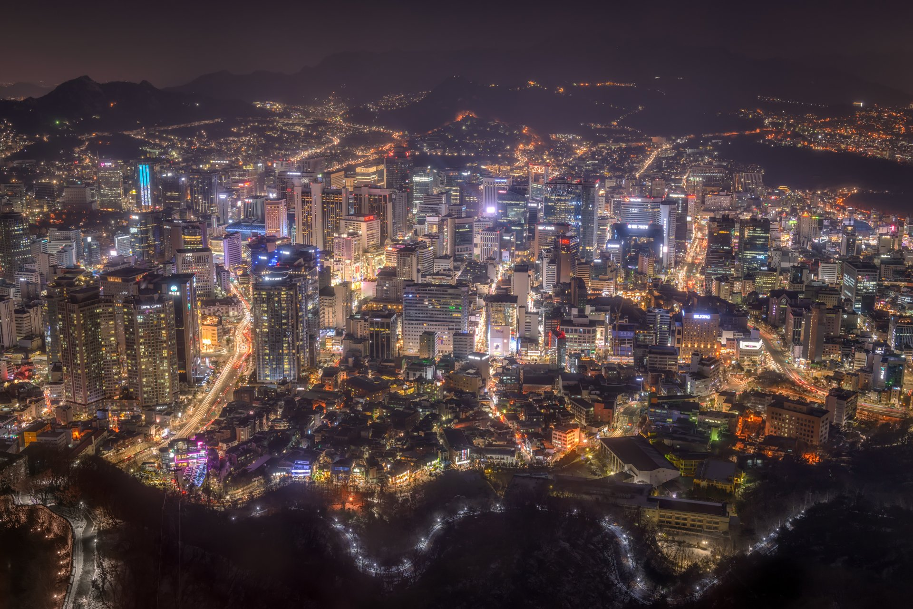

Officiellement la république de Corée est un pays d'Asie de l'Est qui couvre la moitié sud de la péninsule coréenne. Sa capitale est Séoul. La langue officielle est le coréen, dont l'écriture est le hangeul, et la monnaie le won. L'animal représentant le pays est le tigre.
Au nord, son unique frontière terrestre d'une longueur de 238 km avec la Corée du Nord, est constituée par la zone démilitarisée (DMZ). La Corée du Sud est bordée par la mer Jaune à l’ouest, par la mer du Japon à l’est (dont l'appellation est dénoncée par les Sud-Coréens qui la désignent « mer de l'Est ») et par le détroit de Corée au sud.
Actuellement, la Corée du Sud est la dixième puissance économique mondiale selon le calcul du produit intérieur brut en parité de pouvoir d'achat et quinzième selon le critère monétaire traditionnel. En 2016, elle est à la fois un des pays d’Asie de l’Est avec l’IDH le plus élevé et le taux de fécondité le plus faible.

Séoul de nuit
La Corée en chiffres :
Population
Superficie
PIB
Espérance de vie
Taux de natalité
Taux de mortalité
Fête nationale
Nature de l'État
Point culminant
51 705 905
100 356 km²
1 646,739 milliards $USD
82,70 ans
5,90%
5,75%
15 Août
République
mont Halla
Vidéo sur la Corée :
Histoire :
La première fondation d'un État en Corée remonte au IIIe millénaire avant l'ère chrétienne. Depuis lors, ce pays a survécu tant bien que mal entre la Chine et le Japon sans toutefois perdre son identité. La division contemporaine de la Corée remonte aux suites de l'occupation japonaise commencée à partir de 1905. À la fin de la Seconde Guerre mondiale en 1945, la Corée a été divisée en deux zones par les puissances mondiales, les États-Unis et l'URSS. En 1948, le Sud et le Nord se constituaient chacun en un État indépendant, un Nord communiste, et un Sud sous influence états-unienne. En juin 1950, la Guerre de Corée commençait. Le Sud était soutenu par les États-Unis, le Nord par la Chine. L'accord de Panmunjeom, signé en 1953, a mis fin aux combats mais pas à la guerre, qui n'est, en 2004, toujours pas officiellement terminée. La péninsule de Corée est divisée par une zone démilitarisée aux alentours du 38e parallèle. C'est la zone la plus militarisée du monde.Après la guerre, la République de Corée du Sud, régime autoritaire sous le gouvernement autocratique de Syngman Rhee et la dictature de Park Chung-hee, a connu une croissance économique rapide. C'est dans les années 1980 que les manifestations ont mis fin à la dictature pour installer un pouvoir démocratique. Kim Dae-jung est le premier président bénéficiant d'une véritable légitimité démocratique.La possibilité d'une réunification reste un sujet important de la vie politique péninsulaire : aucun traité de paix n'a été signé avec le Nord. La Corée du Sud maintient des efforts en vue d'améliorer la situation, malgré les menaces autour du programme nucléaire du Nord.